Transformer
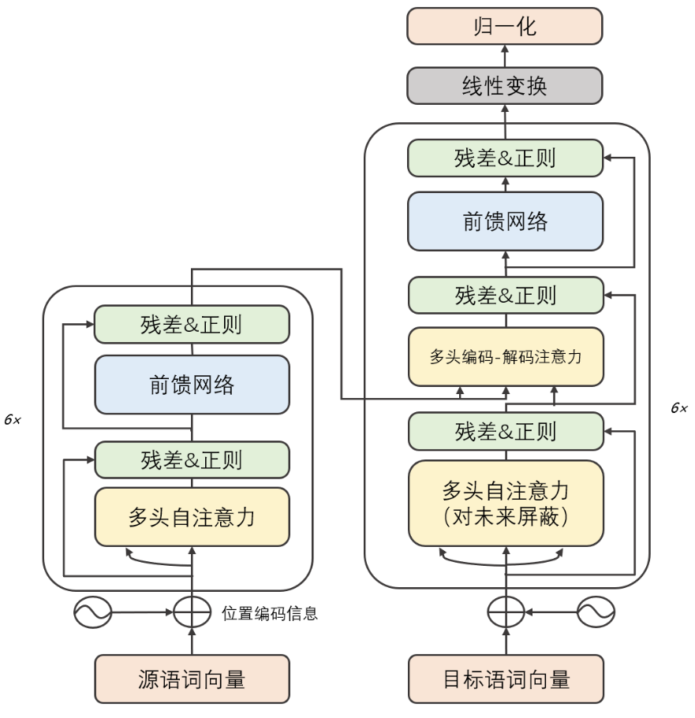
Transformer 整体结构
Transformer 应用在机器翻译领域（例）。（这里 Transformer 作为一个黑盒，不需要关注其内部结构，仅需 输入法语，输出相对应的英语）
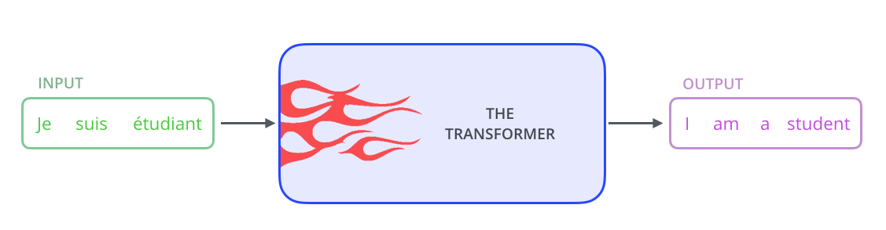
Transformer 架构主要由编码器（Encoder）和解码器（Decoder）组成，编码器用于学习输入序列的表示，解码器用于生成输出序列；（二者之间存在一定的联系）
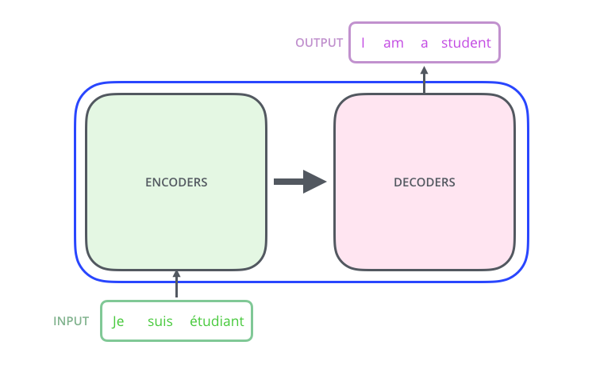
详细展开，编码器由 6 个 Encoder 组件组成，同样编码器也是 6 个 Decoder 。（6 个是原论文所给出的，可作为超参数自己设置）
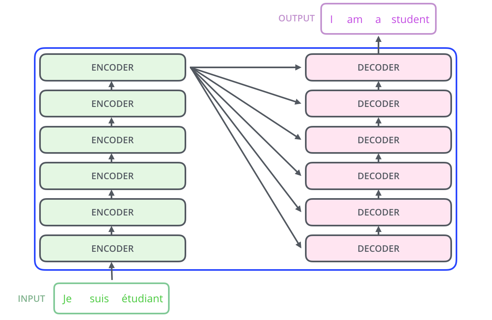
6 个 Encoder 组件结构相同，但权重不共享，每个 Decoder 组件可分为两个子层“前馈神经网络子层（Feed Forward Neural Network）”和“自注意力子层（Self-Attention）”。
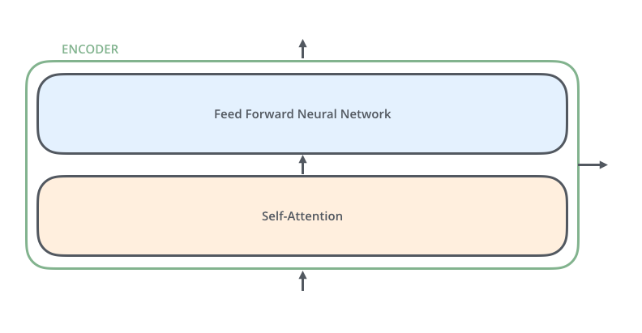
Encoder 输入首先进入自注意力子层，其主要作用是：编码处理时同时关注输入序列中的其他词汇。随后其输出进入前馈神经网络子层，对于输入序列中每个不同位置的词汇，都独立（并行）地使用相同的前馈神经网络。
Decoder 组件也含有前面编码器中的两个层，只不过中间夹一个“编码器-解码器注意力子层（Encoder-Decoder Attention）”，其主要作用是：让解码器获得编码器对输入序列的语义编码，能够注意到输入序列中相关的部分（使 Decoder 有选择地从 Encoder 的输出中提取相关信息，将编码后的源语言信息融合到当前的解码过程中，帮助 Decoder 更好地理解源语言的语义和上下文，从而生成更准确的目标语言序列）。
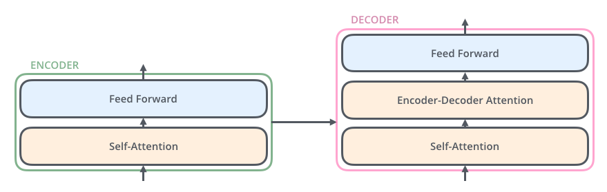
张量
（标量 -> 向量 -> 张量）
Transformer 和其他 NLP 模型（比如 RNN、LSTM）的处理一样，首先将输入序列的每个单词通过“词嵌入算法（Word Embedding）”转化为对应的向量。
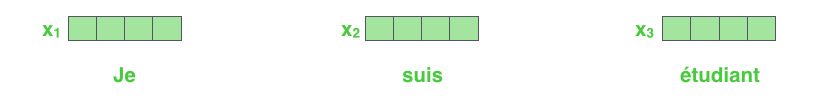
这 4 哥格子表示 512 （原文给的）维度词嵌入向量，而不是 4 维。
所有编码器接收一组向量作为输入，最下层的编码器接收原始 embedding 向量，之后的编码器接收前一个编码器的输出。
向量长度可作为超参数自己设置，一般为训练集中最长的那个句子长度。
经过 Embedding 后得到的向量依次通过编码器组件中的两个子层。
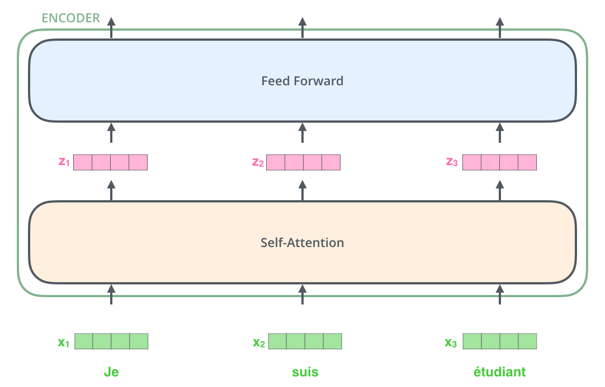
在自注意力子层每个位置上的单词之间存在依赖关系，而在前馈神经网络子层中没有这些依赖关系，各路径上经过前馈神经网络子层时并行计算。
编码器的工作机制
以句子 Thinking Machine 为例：
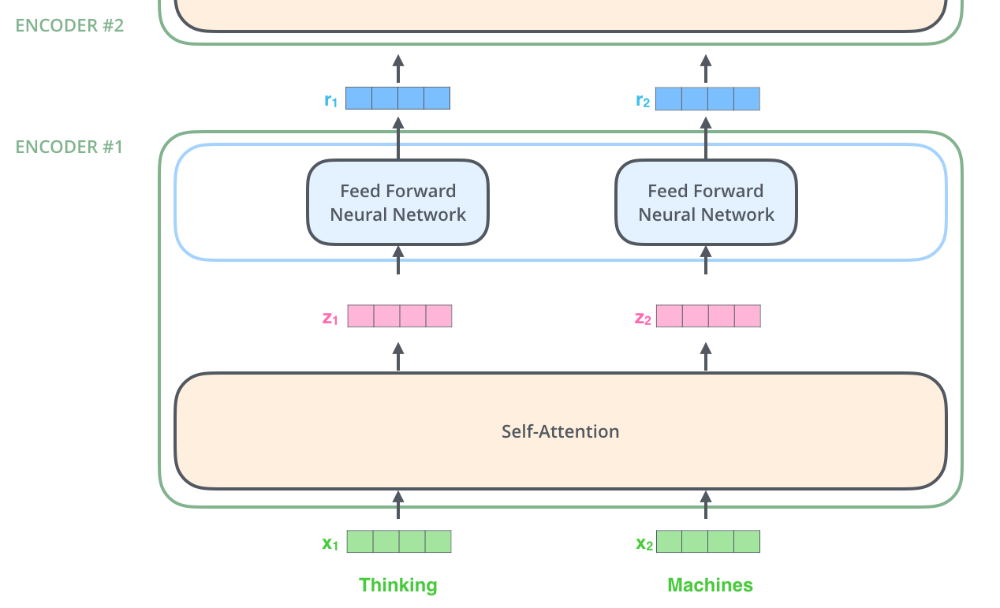
自注意力机制
以翻译 The animal didn’t cross the street because it was too tired 为例：
这里的 it 指 street 还是 animal ？人容易理解，对于算法不好说~
当模型处理 it 这个词时，自注意力机制会让 it 和 animal 关联起来。
当模型对输入序列某个位置的单词进行处理（即语义编码）的时候，自注意力的作用就是看一看输入序列中其他位置的单词，来实现对该位置单词更好的编码（更准确的理解语义）。
自注意力机制即让其他相关单词的“理解”融入到当前处理单词当中。
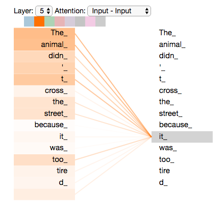
细说自注意力机制
以某一位置的单词处理为例：
整个过程分成了六步详细解释：
- 第一步，计算 query、key、value 向量；
- 第二步，计算注意力得分（attention score）；
- 第三步，将注意得分除以 8 ；
- 第四步，将注意力得分进行 Softmax 处理；
- 第五步，将每个 value 向量和注意力得分进行相乘；
- 第六步，将上一步的结果相加，得到当前位置的注意力结果；
$$
\text{Attention}(Q,K,V)=\text{softmax}\left(\frac{QK^T}{\sqrt{d_k}}\right)V
$$$d_k$ 是 Q，K 矩阵的列数，即向量维度。
第一步：计算 query、key、value 向量
对编码器的每个输入向量都计算三个向量，即都算一个 query、key、value 向量；
把输入的词嵌入向量与三个权重矩阵相乘。权重矩阵是模型训练阶段训练出来的。
注意，这三个向量维度是 64，比嵌入向量的维度小，嵌入向量、编码器的输入输出维度都是 512 。这三个向量不是必须比编码器输入输出的维数小，这样做主要是为了让多头注意力的计算更稳定。
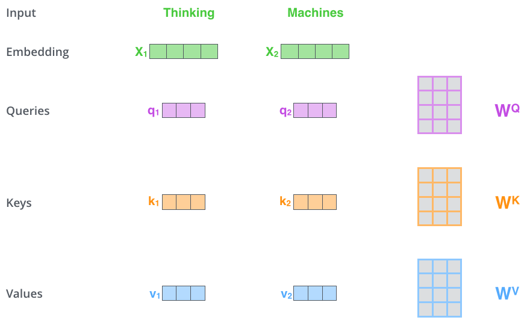
第二步：计算注意力得分
自注意力给输入句子中的每个单词打分（query 和 key 点积得到），这个分数决定当编码某个位置的单词的时候，应该对其他位置上的单词给予多少关注度。
假设输入第一个单词 Thinking ，则将其对应的 query 和其他的 key 依次相乘，即这里的 $q_1\cdot k_1$、$q_1\cdot k_2$ 。
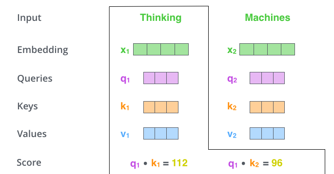
第三步：将注意力得分除以 8
为什么选 8 ？是因为 key 向量的维度是 64，取其平方根，让梯度计算的时候更稳定。默认是这么设置的，当然也可以用其他值。（即公式中的 $\sqrt{d_k}$ ）
第四步：将注意力得分进行 Softmax 处理
将结果扔进 softmax 计算，使结果归一化，将所有的注意力得分映射为一个概率分布。
Softmax 是深度学习中广泛使用的一种激活函数，它可以将一组实数映射到 0 和 1 之间，并且将所有输出值的总和为 1，让输出结果更具有直观的解释性。
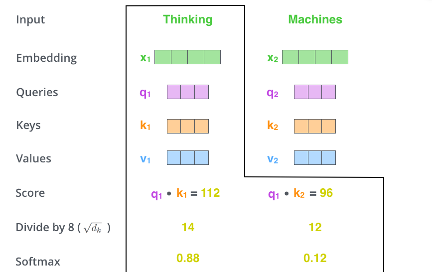
softmax 后的注意力分数表示在计算当前位置的时候，其他单词受到的关注度的大小。显然在当前位置的单词肯定有一个高分，但是有时候也会注意到与当前单词相关的其他词汇。
第五步：将每个 value 向量的注意力得分进行相乘
将上一步 Softmax 后的注意力得分与每个位置单词对应的 value 进行相乘，可以理解为得到多个新的向量 value’。保流想要关注的单词的值的完整性，并隐去那些不相关的单词（例如，通过将它们乘以 0.001 这样的小数字）。
乘以 value 向量，是为了“抽取”出 query 和 key 相乘后的注意力得分中的关联信息。
第六步：将上一步的结果求和，得到当前位置的注意力结果
求和得到对应单词的最终输出。
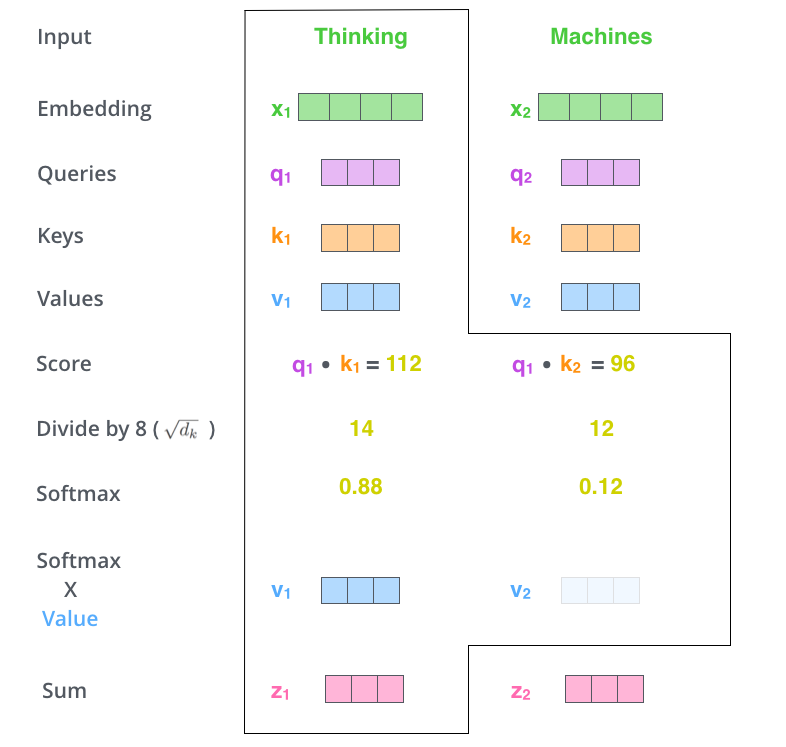
每个位置的单词的注意力计算方式都是如此。
自注意力矩阵计算说明
为了更高效的处理，实际上基于向量矩阵进行批量计算（这里的 X 每一行即一个词），将其分别于三个权重矩阵相乘，得到的 Query、Key、Value。
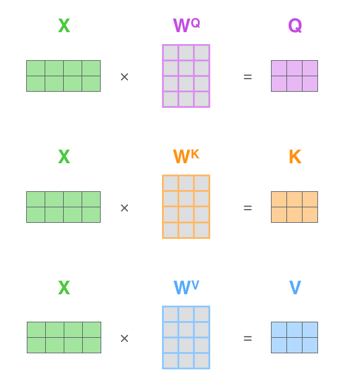
将之前的第二步到第六步压缩到一个公式中得到最终的注意力结果 Z 。
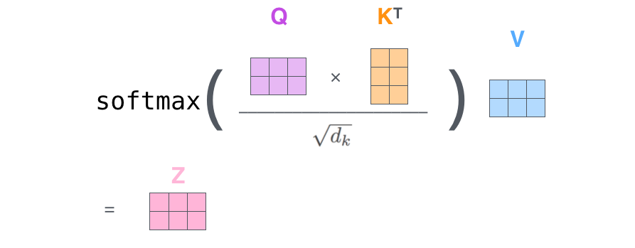
多头注意力机制
扩展和增强 Transformer 模型关注不同位置的能力，或者说从多个维度来表示。虽注意力机制本身正是去关注不同位置的关联关系，但这种关联关系从不同的角度去看可能是不同的。
给予注意力层多个“表示子空间”，多头注意力中用多个不同的 $W^Q$、$W^K$、$W^V$ 权重矩阵（Transformer 使用 8 个头部）。
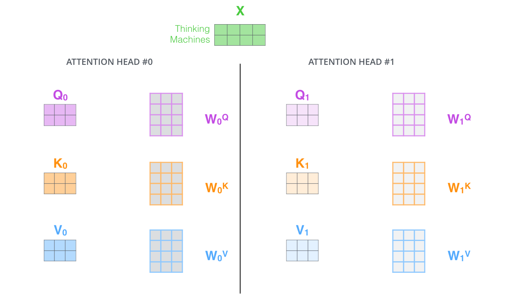
8 次不同计算得到 8 个不同的 Z 。
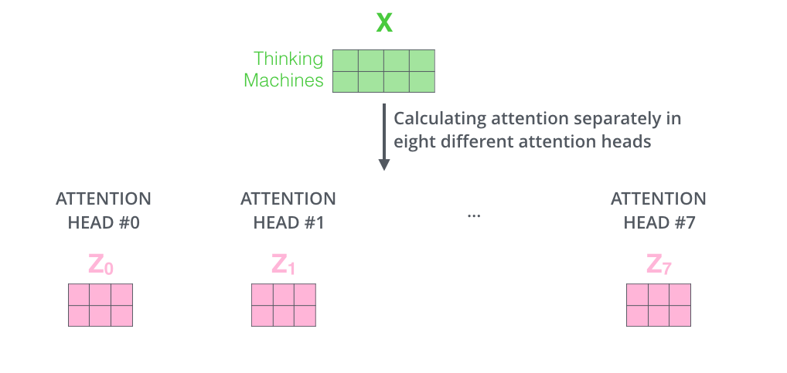
其结果随后会进入前馈神经网络子层，但其不能同时接收和处理 8 个不同的注意力结果矩阵，输入需要单个矩阵（矩阵中的每行向量对应一个单词）。
将 8 个矩阵连接起来，然后乘以一个附加的权重矩阵 $W^O$ 。
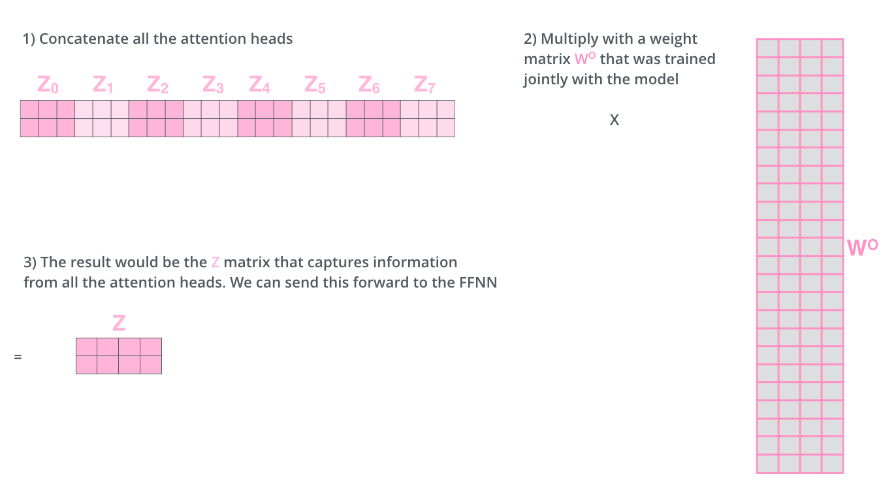
以上就是多头注意力机制的全部内容，将其整合到一张图中：
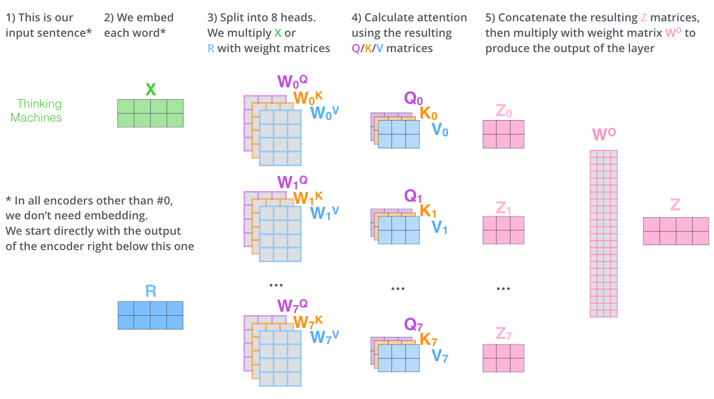
回顾之前的例子，观察编码 it 的时候每个注意力头的关注点都在哪里：
（2 个 head）
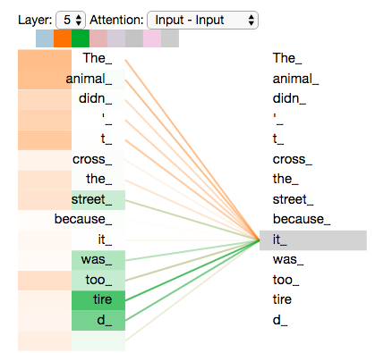
（8 个 head）
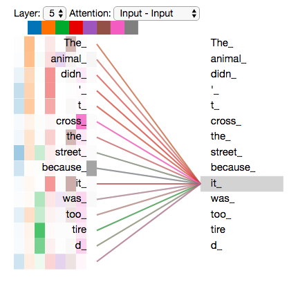
使用位置编码表示序列的位置
Ann’s Blog：Transforme 结构：位置编码详解
输入序列中的单词，自身的语义信息固然重要，但单词的位置也可能会对语义理解产生影响。
Transformer 在每个输入的嵌入向量中添加了位置向量。这些位置向量遵循某些特定的算法计算而来，帮助模型确定每个单词的位置或不同单词之间的距离。将其添加到词嵌入向量中，并被投射到 Q、K、V 中，就可以在计算点击注意力时提供有意义的距离信息。
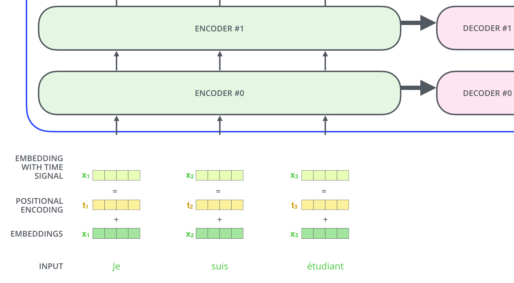
位置编码向量和词嵌入向量的维度是一样的，它们之间会进行向量相加的操作。
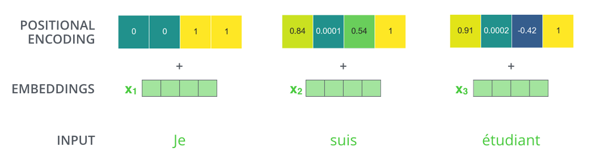
Google Tensor2Tensor 中的实现方法，向量前半部分用 sin 函数生成，后半部分用 cos 函数生成，再拼接起来形成完整的位置编码向量，如下，每行表示一个单词的位置编码向量。
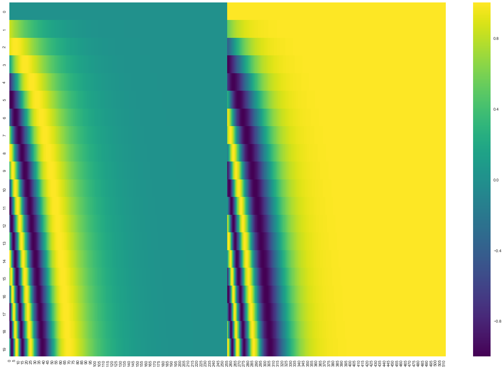
另一种位置编码的计算（原论文中给出的）
$$PE_{(pos,2i)}=\sin(pos/1000^{2i/d})$$
$$PE_{(pos,2i+1)}=\cos(\text{pos}/1000^{2i/d})$$
公式可以简单理解为位置编码向量相邻元素交替使用 sin 和 cos 函数计算。
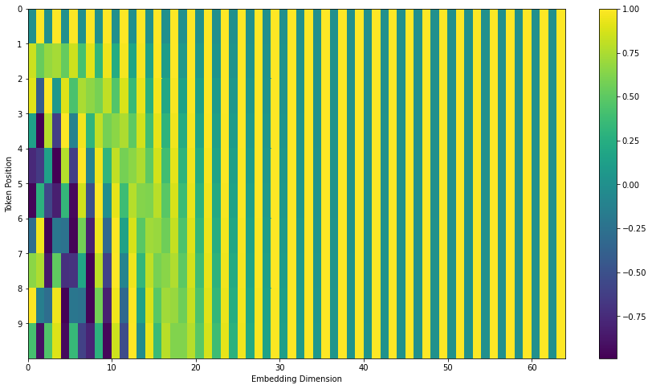
残差（Residuals）&归一化（Normalization）
每个编码器的自注意力子层和前馈神经网络子层，除了核心工作，都有一个残差连接（Residuals）和归一化处理（Normalization）的过程。
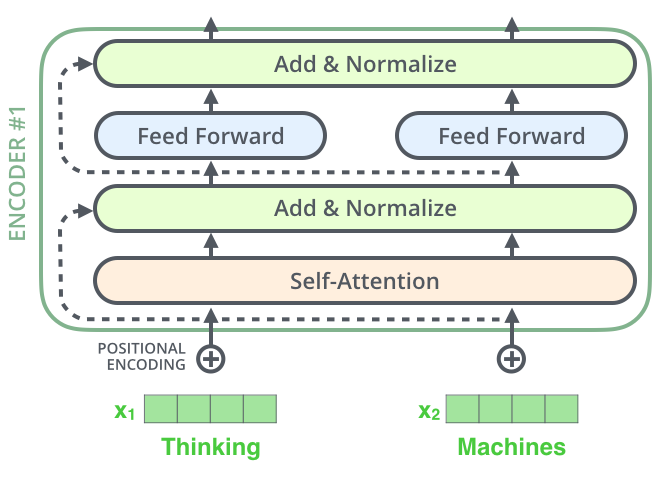
所谓的残差连接，就是将本层的输入（也就是上一层的输出）和本层的输出进行相加操作，这里主要是为了避免输入信息的丢失。如下图所示，残差连接就是用输入矩阵 X 与输出矩阵 Z 相加：
所谓的归一化，就是将数据缩放转换到一个特定的范围，比如 -1～1 或 0～1 ，归一化算法并不唯一。
归一化（Normalization）和 Softmax 是两个不同的处理过程。但都有归一化的效果。
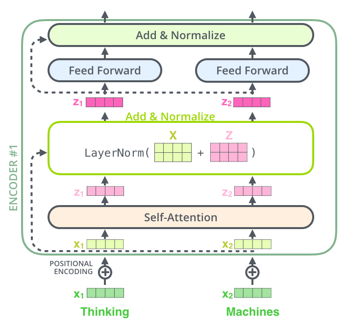
解码器中，每个子层同样存在残差连接和归一化的过程，下图展示两个编码器和两个解码器的残差连接和归一化处理过程。
能够发现一个有意思的点 —— 最上层的编码器的输出，会作为每个解码器的“编码器-解码器注意力子层”的输入。当然，这仅适用于 Encoder-Decoder 架构的 Transformer 模型。
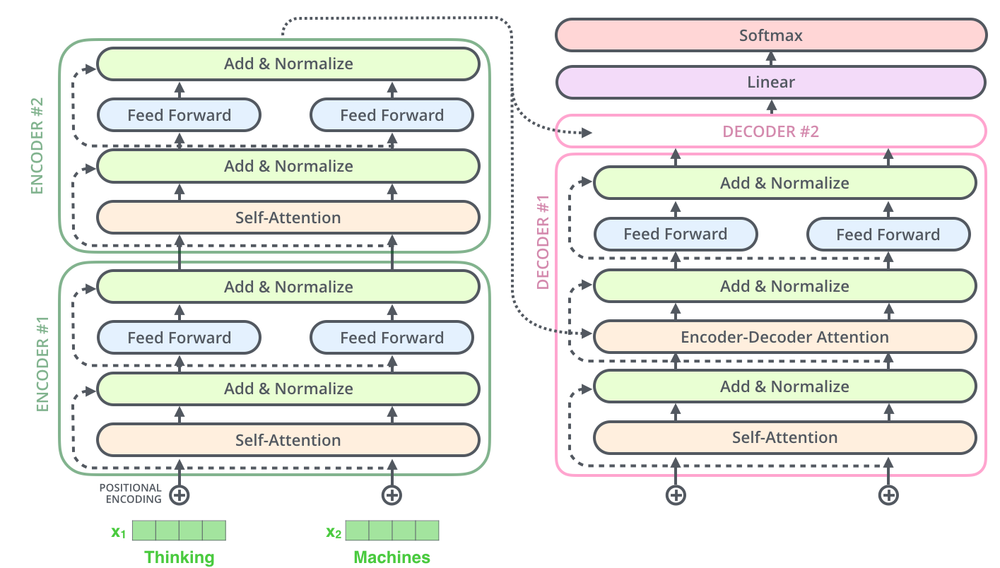
解码器的工作机制
将最后一个编码器组件的输出转换为一组注意向量 K 和 V 。每个解码器组件将在“encoder-decoder attention”层中使用编码器传过来的 K 和 V ，来帮助解码器投放注意力到输入序列中的适当位置上，因为它们蕴含了输入序列不同位置单词的语义编码信息。
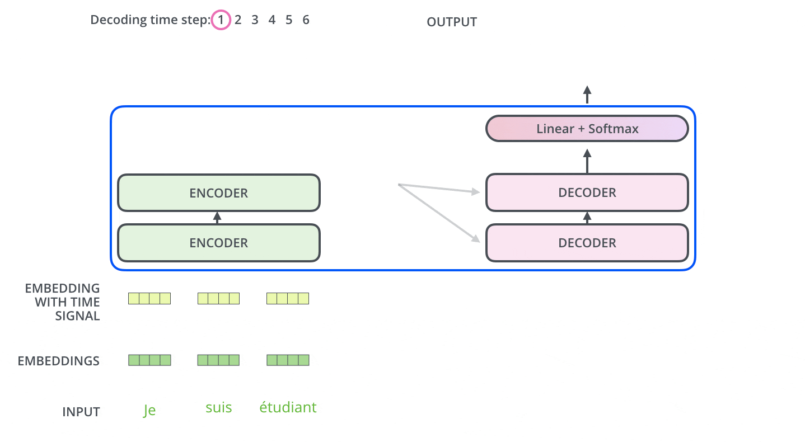
上图的输出过程会一步一步地重复进行（即图中的“时间步 Decoding Time Step”），直到碰见特殊的句子结束符。
解码器每一个时间步的输出，都会和本时间步的输入拼接起来，作为下一个时间步的输入继续喂给最底层的解码器单元进行处理。
跟编码器一样，在解码器中我们也为其添加位置编码，以指示每个单词的位置。
解码器模块并不是一次输出完整的句子，而是一个单词一个单词的输出。
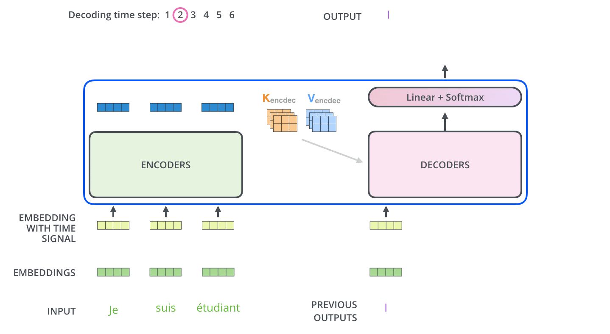
解码器中的自注意力层和编码器中的不太一样：
- 编码器的注意力：关注整个输入序列的每个位置的单词，因为编码器要对整个序列进行编码
- 解码器的注意力：仅关注当前已经输出序列的每个位置的单词，因为解码器只会看到已经输出的序列
实现方法是在自注意力层的 softmax 之前进行 mask ，将未输出位置的信息设为极小值。
“encoder-decoder attention”层的工作原理和前边的多头自注意力差不多，但是 Q、K、V 的来源不用，Q 是从下层创建的（比如解码器的输入和下层 decoder 组件的输出），但是其 K 和 V 是来自编码器最后一个组件的输出结果。
最后的线性层和 Softmax 层
Decoder 输出的是一个浮点型的向量，如何将其变成一个词？这就是最后一个线性层和 Softmax 要做的事情。
线性层，一个简单的全连接神经网络，将解码器生成的向量映射到 logits 向量中。logits 的维度和词汇表大小一致，词汇表代表模型所认识的单词数量，若词汇表大小是 10000，那么 Logits 向量的维度也是 10000，每一维向量值对应一个单词的分数值。
Softmax 层将分数转换为概率（全为正，和为 1 ），选择其中概率最大的位置词汇作为当前时间步的输出。
- 线性层：解码器输出向量 -> Logits 向量（维度=词汇表大小）
- Softmax 层：Logits 向量的分数值形式 -> 概率值形式
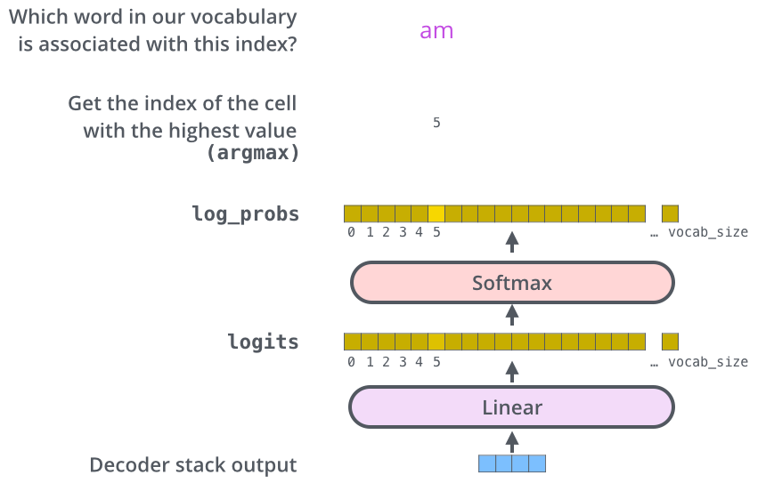
训练过程概述
现在我们已经了解了 Transformer 的整个前向传播的过程，那我们继续看一下训练过程。
在训练期间，未经训练的模型会进行相同的前向传播过程。由于我们是在有标记的训练数据集上训练它，所以我们可以将其输出与实际的输出进行比较。
假设输出的词汇表仅包括 6 个单词（按照字母顺序）：“a”、“am”、“i”、“thanks”、“student”和“<eos>”，最后的“<eos>”代表句子结尾符号。
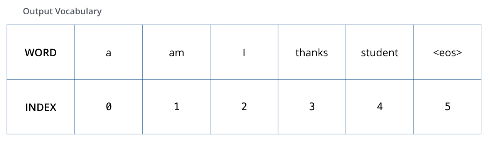
定义好词汇表，就可以使用词向量来表示词汇表中的每个单词了。这里采用独热编码（one-hot 编码）来构造词向量。例如，可以用下面的向量表示单词“am”：
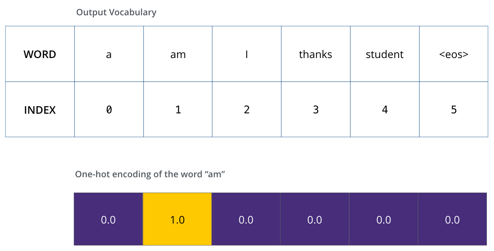
损失函数
损失函数，模型训练阶段优化模型的指标。
训练阶段，一个简单的例子（一个句子就一个词）来训练模型：把 “merci” 翻译成 “thanks”。期望模型最终输出能够体现出 thanks 概率最大的情况，这里由于还未进行训练（模型参数仅是随机初始化），所以才会有如下的输出结果：
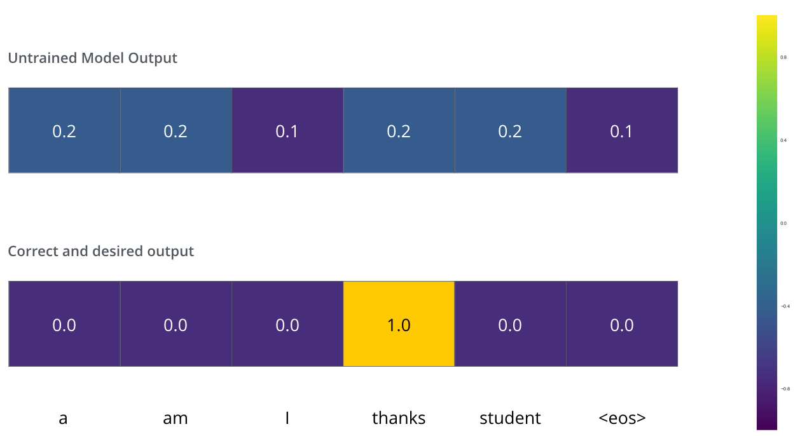
一般通过比较两种概率分布来逐步更新参数，本例中只是将二者相减。实际应用中的损失函数请查看交叉熵损失和Kullback–Leibler散度。
上述只是最最简单的一个例子。现在我们来使用一个短句子（一个词的句子升级到三三个词的句子了），比如输入 “je suis étudiant” 预期的翻译结果为： “i am a student”。
所以期望模型不是一次输出一个词的概率分布了，能不能连续输出概率分布，最好满足下边要求：
- 每个概率分布向量长度都和词汇表长度一样。我们的例子中词汇表长度是6，实际操作中一般是30000或50000。
- 例子中第一个概率分布应该在与单词“i”相关的位置上具有最高的概率
- 第二个概率分布在与单词“am”相关的单元处具有最高的概率
- 以此类推，直到最后输出分布指示“<eos>”符号。除了单词本身之外，单词表中也应该包含诸如“<eos>”的信息，这样softmax之后指向“<eos>”位置，标志解码器输出结束。
（按照这个任务，表示“thanks”那个向量压根就不应该出现，也就是第 4 个格子为 1.0 的向量）
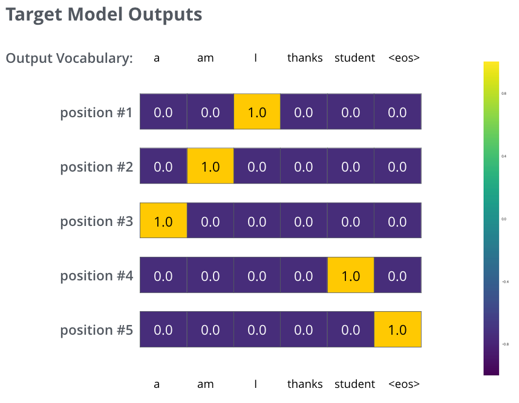
在足够大的数据集上训练模型足够长的时间后，期望生成的概率分布如下所示：
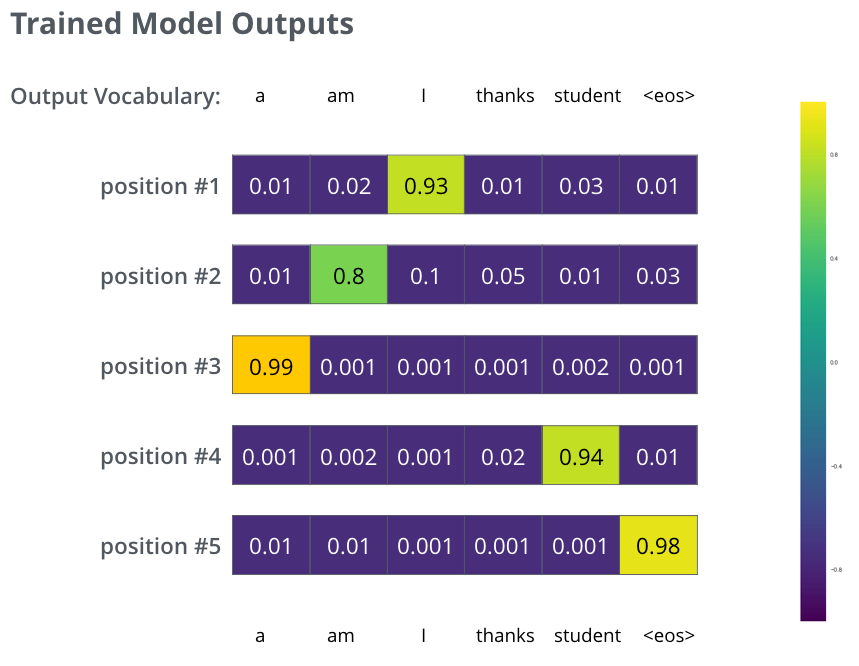
每个每个位置的向量都有其概率分布，表示这个位置输出某个单词的概率，但模型每次只能输出一个单词，也就是上图中每一行都要从 6 个格子中选择一个出来，该如何选择呢？一般的两种方法：
- 方法一，Greedy Decoding（贪心算法），模型每次都选择概率最高的那一个所对应的单词。
- 方法二，Beam Search（束搜索），模型每次都选择概率排名靠前的 n 个单词，这个 n 就是“Beam Size（束宽）”，比如设置成 2，就代表每次选择概率排名前 2 名的单词进行输出（“I”和“a”）。
PS
Attention 机制的工作原理简单理解
模型把每个词编码为一个向量，将向量送入模型中，在这里，每个词都会像发送一条“询问”一样，去问其他词：“咱们之间的关系紧密吗？”，如果关系紧密，模型则会采取一种行动，反之则会采取另一种行动；
注意力机制的核心就是去重构词向量；
- Q：即 Query，可以理解为某个单词像其他单词发出询问；
- K：即 Key，可以理解为某个单词回答其他单词的提问；
- V：即 Value，可以理解为某个单词的实际值，表示根据两个词之间的亲密关系，决定提取出多少信息出来融入自身；
Q、K 和 V 是通过输入向量表示 Transformer(x) 与相应的权重矩阵 $W_q$、$W_k$、$W_v$ 进行矩阵运算得到的；（这些权重矩阵最初通过数学方法进行初始化，随后在模型多轮训练的过程中逐渐更新和优化。）
- 在 Q 矩阵中的第一行的意义，它包含第一个词（与输入 x 的第一行对应）在查询其他词时所需的关键信息；
- 在 K 矩阵的第一行中存储的是第一个词在回应其他词的查询时所需的信息。
- 而 V 矩阵的第一行所包含的是第一个词自身携带的信息。
在通过 Q 和 K 确定了与其他词的关系后，这些存储在 V 中的信息被用来重构该词的词向量。
向量的内积在向量的几何含以上表达的是：内积越大，两个向量更趋于平行关系，即两个向量更加相似；当内积为 0 时，两向量呈现垂直关系，即两向量毫不相关。
对于 Attention 机制中这种 Q 和 K 一问一答的形式，问的就是两个词之间的紧密程度，所以可以通过内积的方式来衡量两个词之间的相似性。
由于它对自己也进行提问并回答，所以 Self-Attention
（Why？baby它不把自己在这个句子中的重要性表现出来，不对自己的信息进行重构的话，它可能就没办法改变自己原有的意思，也就无法从原本的意思“它”改为指代“Animal”）
重构 V 的过程，可以理解为每个词都会拿出部分信息，最终得到 Z 。
学习原文：
https://jalammar.github.io/illustrated-transformer/
https://blog.csdn.net/qq_36667170/article/details/124359818
https://zhuanlan.zhihu.com/p/697743348
https://baijiahao.baidu.com/s?id=1651219987457222196&wfr=spider&for=pc
动手学PyTorch建模与应用：从深度学习到大模型